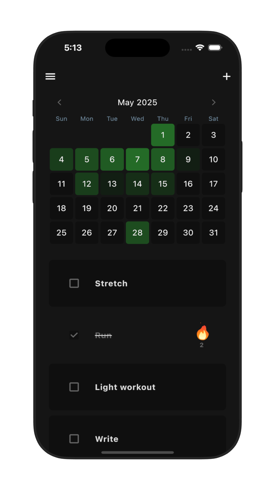

James Clear
Visual motivation that ignites your consistency. Watch your progress grow day by day.
Check habits right from your home screen. Progress tracking at your fingertips.
Gentle nudges at the perfect time. Stay consistent without feeling overwhelmed.
Visualize your year of progress at a glance. Spot patterns and celebrate consistency.
Minimal Habit Tracker
